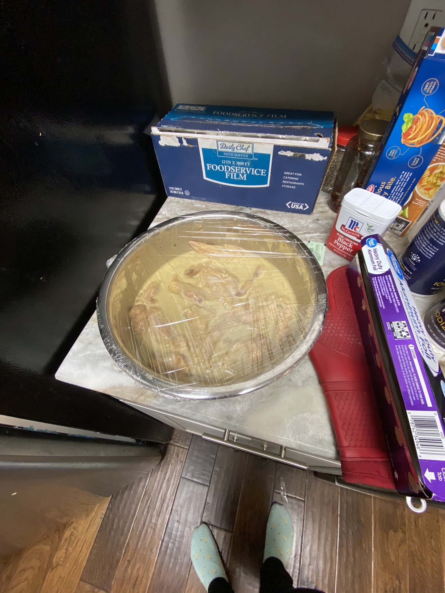

Peng's Favorite Marinade

Description
This zesty lime tasting marinade can be used just about on any type of meat!
Ingredients
- 1/3 cup soy sauce
- 1/2 cup olive oil
- 1/3 cup fresh lemon juice
- 1/4 cup Worcestershire sauce
- 1 1/2 tablespoons garlic powder
- 3 tablespoons dried basil
- 1 1/2 tablespoons dried parsley flakes
- 1 teaspoon ground white pepper
- 1 teaspoon dried minced garlic
Steps
- Blend all the goodies above together
- let the meats swim in the pool of marinade for 6+ hours